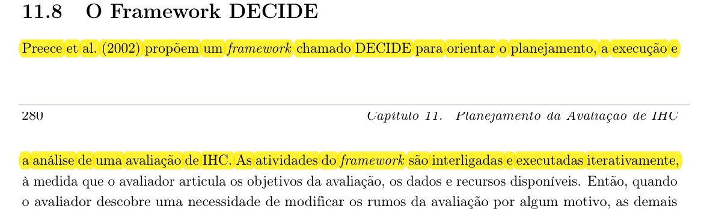
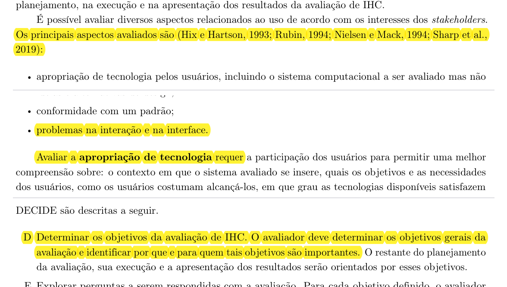
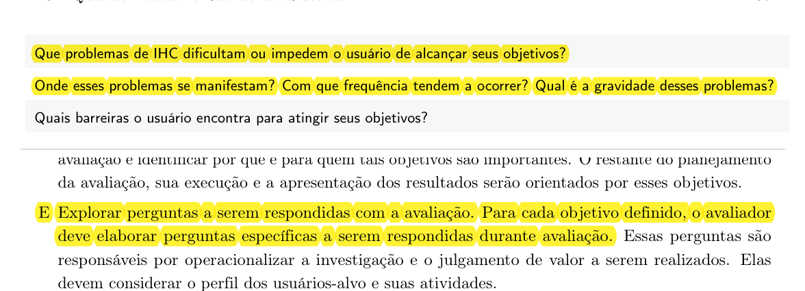
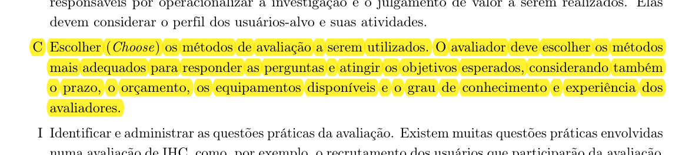
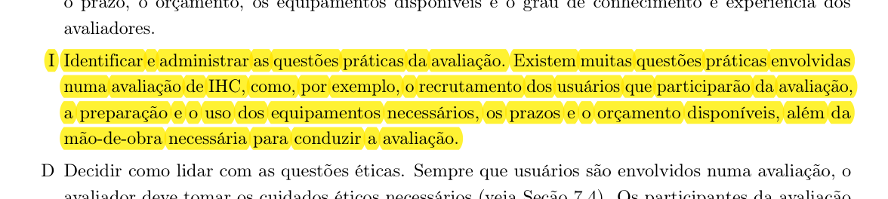
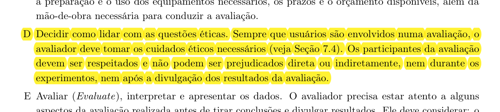
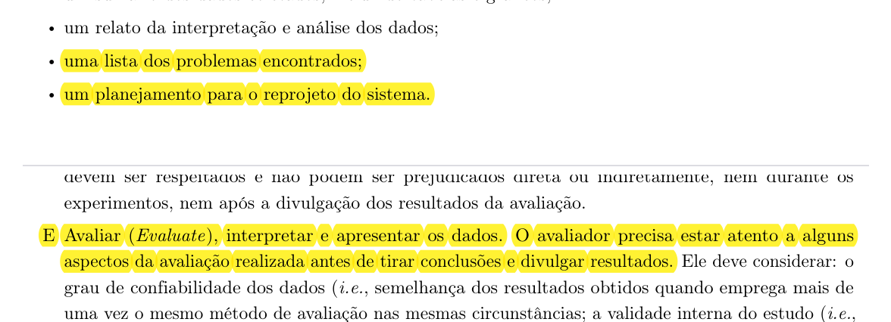

Planejamento da Avaliação da Análise de Tarefas¶
Histórico de Versão e Contribuição¶
| Data | Versão | Descrição | Autor(es) | Revisor(es) |
|---|---|---|---|---|
| 13/10/2026 | 1.0 |
Elaboração do Planejamento da Avaliação da Análise de Tarefas fundamentado no Framework DECIDE (Capítulo 11 de Barbosa et al., 2021). | Carlos Costa | Arthur Mariani |
1. Introdução¶
Este artefato apresenta o Planejamento da Avaliação da Análise de Tarefas desenvolvido pelo Grupo 05 no âmbito da disciplina de Interação Humano-Computador (IHC), correspondente à Etapa 4 do projeto focado no portal institucional e nos serviços digitais da Secretaria de Estado de Transporte e Mobilidade do Distrito Federal (SEMOB-DF).
Durante a Etapa 2 de Análise de Requisitos, a equipe modelou tarefas críticas através de duas técnicas consagradas da literatura: a Análise Hierárquica de Tarefas (HTA - Hierarchical Task Analysis) (Annett e Duncan, 1967; Barbosa et al., 2021) e o ConcurTaskTrees (CTT) (Paternò, 1999; Barbosa et al., 2021), abrangendo tarefas operacionais de passageiros e de motoristas de transporte público (TAR-01 a TAR-07).
Para garantir que tais modelos conceituais sejam representativos, verossímeis e capturem com fidelidade os objetivos humanos, as barreiras de interação e os fluxos práticos de uso, faz-se indispensável realizar uma avaliação formativa antes da prototipação detalhada. Este planejamento adota formalmente o Framework DECIDE (Preece et al., 2002; Rogers et al., 2013; Barbosa et al., 2021) para articular sistematicamente objetivos, perguntas, método de investigação, questões práticas, cuidados éticos e a interpretação dos resultados.
2. Fundamentação Teórica: O Framework DECIDE¶
O planejamento da avaliação estrutura-se com base nas diretrizes apresentadas no Capítulo 11 (Planejamento da Avaliação de IHC) do livro-texto oficial da disciplina (Barbosa et al., 2021, p. 279–280). Conforme ensinam os autores:
"Preece et al. (2002) propõem um framework chamado DECIDE para orientar o planejamento, a execução e a análise de uma avaliação de IHC. As atividades do framework são interligadas e executadas iterativamente, à medida que o avaliador articula os objetivos da avaliação, os dados e recursos disponíveis. Então, quando o avaliador descobre uma necessidade de modificar os rumos da avaliação por algum motivo, as demais atividades são afetadas."
— BARBOSA et al. (2021, Seção 11.8, p. 279–280) (evidenciado na Imagem 1).
O acrônimo DECIDE sintetiza as seis atividades essenciais para a condução de qualquer avaliação em IHC:
- D — Determinar (Determine) os objetivos gerais da avaliação de IHC e identificar por que e para quem tais objetivos são importantes.
- E — Explorar (Explore) as perguntas específicas a serem respondidas com a avaliação para operacionalizar a investigação.
- C — Escolher (Choose) os métodos de avaliação mais adequados considerando prazos, recursos e perfil do estudo.
- I — Identificar (Identify) e administrar as questões práticas envolvidas (recrutamento de usuários, ferramentas, infraestrutura e custos).
- D — Decidir (Decide) como lidar com as questões éticas de pesquisas envolvendo seres humanos (respeito, privacidade e TCLE).
- E — Avaliar (Evaluate), interpretar e apresentar os dados coletados de maneira criteriosa.
3. Aplicação do Framework DECIDE à Análise de Tarefas¶
3.1 D — Determinar os Objetivos da Avaliação da Análise de Tarefas¶
Conforme preconizado por Barbosa et al. (2021, Seção 11.2, p. 264–265), a definição clara do que avaliar direciona todo o restante do estudo. Na literatura de IHC, os principais aspectos avaliados dividem-se em quatro categorias fundamentais (evidenciado na Imagem 2):
- Apropriação de tecnologia pelos usuários;
- Ideias e alternativas de design;
- Conformidade com um padrão;
- Problemas na interação e na interface.
Para a avaliação dos diagramas de Análise de Tarefas (HTA e CTT), o foco primordial recai sobre a identificação de problemas na interação e na interface no plano conceitual e operacional, acompanhado da verificação de apropriação da tecnologia. Especificamente, os objetivos determinados para esta avaliação são:
- Objetivo Geral 1 (Validação de Modelos Conceituais): Verificar se a decomposição em objetivos, subobjetivos e operações (HTA) e a lógica de relações temporais e tipos de tarefas (CTT) refletem a execução real e as expectativas dos usuários ao utilizarem os serviços do SEMOB-DF.
- Objetivo Geral 2 (Identificação de Falhas de Interação): Identificar operações omitidas, redundantes, ambíguas, caminhos de erro ou decisões contra-intuitivas que possam frustrar os usuários durante a navegação.
- Objetivo Geral 3 (Apoio ao Reprojeto): Coletar sugestões qualitativas de melhoria e refinamento dos modelos de tarefas para subsidiar a prototipação de baixa e média fidelidade das etapas seguintes.
3.2 E — Explorar as Perguntas a Serem Respondidas¶
A atividade E tem a função de operacionalizar os objetivos definidos, convertendo-os em questionamentos precisos que os avaliadores buscarão responder ao longo da sessão com os participantes (Barbosa et al., 2021, Seção 11.8 e Tabela 11.1) (evidenciado na Imagem 3).
A Tabela 1 estrutura as perguntas investigativas formuladas para a avaliação das tarefas:
Tabela 1 — Perguntas Investigativas da Avaliação da Análise de Tarefas
| Categoria da Investigação | Pergunta Operacional | Foco no Modelo (HTA / CTT) |
|---|---|---|
| Compreensão e Correspondência | 1. O objetivo principal da tarefa e os subobjetivos descritos correspondem ao que você faz na prática ao usar os canais da SEMOB-DF? | Hierarquia de Subobjetivos (HTA) |
| Completude das Etapas | 2. Existe alguma ação ou passo que você precisa realizar no cotidiano que não foi representado no fluxo? | Operações e Planos (HTA) |
| Sequenciamento e Lógica Temporal | 3. A sequência descrita e as condições (ações em ordem estrita, escolhas alternativas ou ações simultâneas) fazem sentido lógico? | Relações Temporais CTT (>>, [], |||) |
| Barreiras e Obstáculos | 4. Em que momento da execução dessa tarefa você mais costuma encontrar dificuldades, lentidão ou dúvidas na interface? | Pontos de Decisão e Planos de Erro (HTA) |
| Terminologia e Vocabulário | 5. Os termos técnicos e os nomes das ações atribuídos às operações são compreensíveis e familiares para você? | Rótulos das Tarefas (HTA/CTT) |
| Tratamento de Exceções | 6. Caso ocorra uma falha (ex.: saldo indisponível, sinal de GPS fora do ar ou desvio no trânsito), o fluxo contempla uma saída clara? | Tarefas de Feedback e Tolerância a Falhas |
| Satisfação e Melhoria | 7. Na sua opinião, qual alteração facilitaria ou tornaria a conclusão dessa tarefa mais ágil e menos cansativa? | Visão geral do modelo para reprojeto |
Fonte: Autores (2026), adaptado de Barbosa et al. (2021, Tabela 11.1, p. 266–267).
3.3 C — Escolher os Métodos de Avaliação¶
Segundo Barbosa et al. (2021, Seção 11.7 e Seção 11.8), o método deve ser escolhido com base nas perguntas a serem respondidas, na maturidade do artefato em análise e nos recursos disponíveis (evidenciado na Imagem 4):
"O avaliador deve escolher os métodos mais adequados para responder as perguntas e atingir os objetivos esperados, considerando também o prazo, o orçamento, os equipamentos disponíveis e o grau de conhecimento e experiência dos avaliadores."
— BARBOSA et al. (2021, Seção 11.8, p. 280).
Para a avaliação dos diagramas de Análise de Tarefas (que constituem modelos abstratos e diagramáticos), o grupo selecionou o método de Investigação por Entrevista Guiada por Tarefas (Task Walkthrough com Usuário), complementado por Inspeção Baseada em Cenários:
- Justificativa da Escolha: Modelos analíticos de tarefas (diagramas HTA e árvores CTT) não são naturalmente interpretados por usuários leigos se apresentados de forma puramente técnica. Portanto, uma entrevista semiestruturada conduzida pelo avaliador — na qual o avaliador verbaliza o fluxo, contextualiza cada ação através de cenários de uso reais e solicita a validação do participante passo a passo — é o meio mais eficaz para extrair críticas aprofundadas sem causar sobrecarga cognitiva.
- Dinâmica do Walkthrough:
- O avaliador contextualiza a situação através de uma persona e de um cenário concreto.
- Apresenta o objetivo de nível mais alto e indaga se o participante concorda com a meta.
- Percorre cada plano de ação (HTA) e cada transição de tela/sistema (CTT), conferindo se as tarefas de usuário e do sistema condizem com o fluxo esperado.
- Registra feedbacks, divergências e sentimentos expressos pelo participante.
3.4 I — Identificar e Administrar as Questões Práticas¶
A atividade I assegura que toda a infraestrutura física, tecnológica e logística seja devidamente planejada com antecedência para viabilizar as sessões de avaliação sem imprevistos (Barbosa et al., 2021, Seção 11.7.2 e Seção 11.8) (evidenciado na Imagem 5).
3.4.1 Recrutamento e Perfil dos Participantes¶
O recrutamento baseia-se nos perfis identificados no projeto durante a fase de análise de requisitos: * Perfil Primário (Passageiros do Transporte Coletivo do DF): Usuários regulares de ônibus e metrô que utilizam ou necessitam de funcionalidades como consulta de linhas, recarga e rotas (ex.: personas Larissa, João Pedro, Marcos Paulo, Maria Eduarda e Heitor). * Perfil Terciário/Stakeholder Operacional (Motoristas do STPC/DF): Profissionais da operação que necessitam consultar escalas, boletins de serviço e alertas operacionais em trânsito (representados pela persona Valdir Soares para avaliação de TAR-04 e TAR-05). * Quantidade de Participantes: Conforme Barbosa et al. (2021, p. 275), avaliações formativas qualitativas não buscam significância estatística, mas sim obter indícios consistentes sobre a qualidade de uso e identificar barreiras. Planeja-se a participação de 1 a 2 usuários para cada tarefa foco, totalizando entre 5 e 8 participantes voluntários.
3.4.2 Equipamentos e Ferramental¶
- Ambiente de Videoconferência: Microsoft Teams (institucional) com Google Meet como contingência homologada.
- Recursos de Gravação: Gravação em nuvem da chamada de vídeo e áudio, com software local de apoio (OBS Studio ou ferramenta de captura 123APPS) para prevenção de perdas por falhas de conectividade.
- Apresentação Visual dos Modelos: Exibição dos diagramas HTA (tabelas e árvores) e diagramas CTT em alta resolução via compartilhamento de tela.
- Custos: O projeto é de natureza estritamente acadêmica, de modo que não há remuneração monetária nem custos operacionais financeiros (orçamento zero).
3.4.3 Prazos e Cronograma das Avaliações¶
A Tabela 2 esquematiza o cronograma logístico das sessões de entrevista da Análise de Tarefas:
Tabela 2 — Cronograma Planejado das Sessões de Avaliação da Análise de Tarefas
| Sessão | Tarefa Avaliada | Perfil do Convidado | Formato / Local | Duração Estimada | Avaliador Responsável |
|---|---|---|---|---|---|
| S1 | TAR-01 (Alerta inteligente de saída) | Passageiro regular jovem/estudante | Remoto (Teams) | 20 a 30 min | Igor Dantas Araújo |
| S2 | TAR-02 (Pré-agendamento DF Acessível) | Passageiro com mobilidade reduzida / PCD | Remoto (Teams) | 25 a 35 min | Gabriel Cardone |
| S3 | TAR-03 (Planejamento de Rota e Rastreamento) | Passageiro de viagens inter-regionais | Remoto (Teams) | 25 a 35 min | Lucas Araújo |
| S4 | TAR-04/TAR-05 (Escala e alertas operacionais) | Motorista de ônibus ou operador de transporte | Remoto / Presencial | 25 a 35 min | Carlos Costa |
| S5 | TAR-06 (Consulta DF no Ponto) | Passageiro dependente de ônibus diário | Remoto (Teams) | 20 a 30 min | Rodrigo Barbosa |
| S6 | TAR-07 (Crédito de Vale-Transporte) | Trabalhador usuário de bilhetagem automática | Remoto (Teams) | 20 a 30 min | Arthur Mariani |
Fonte: Elaborado pelos autores (2026).
3.5 D — Decidir como Lidar com as Questões Éticas¶
A condução de qualquer avaliação em IHC que envolva seres humanos exige rigor ético intransigente, pautando-se nas orientações da Seção 7.4 e Seção 11.8 de Barbosa et al. (2021) e nas diretrizes da Resolução nº 510/2016 do Conselho Nacional de Saúde (evidenciado na Imagem 6):
"Sempre que usuários são envolvidos numa avaliação, o avaliador deve tomar os cuidados éticos necessários (veja Seção 7.4). Os participantes da avaliação devem ser respeitados e não podem ser prejudicados direta ou indiretamente, nem durante os experimentos, nem após a divulgação dos resultados da avaliação."
— BARBOSA et al. (2021, Seção 11.8, p. 280).
Para tanto, os seguintes princípios e protocolos foram integrados a este planejamento:
- Princípio da Autonomia: O participante participa de livre e espontânea vontade e tem a prerrogativa expressa de interromper a sessão a qualquer instante, recusar-se a responder a qualquer pergunta ou revogar sua participação a qualquer momento sem penalidades.
- Princípio da Não Maleficência e Beneficência: Assegura-se que a avaliação não exporá o indivíduo a situações de constrangimento, teste de inteligência ou esforço emocional excessivo. O avaliador deixará explícito que é o modelo do sistema que está sob escrutínio, e não o usuário.
- Privacidade e Confidencialidade: Os dados coletados serão utilizados unicamente para os propósitos acadêmicos do projeto de IHC do SEMOB-DF. Nomes, documentos e quaisquer dados sensíveis serão estritamente anonimizados em todas as tabelas e relatórios.
- Consentimento e Permissão para Gravação (TCLE): Antes de iniciar qualquer sessão ou ligar a gravação de tela, o avaliador fará a leitura integral do Termo de Consentimento Livre e Esclarecido (TCLE), solicitando autorização verbal clara e consentimento formal por escrito ou eletrônico para registro de áudio, imagem e notas.
3.6 E — Avaliar, Interpretar e Apresentar os Dados¶
A última etapa do framework abrange a consolidação rigorosa dos dados colhidos, prevenindo distorções interpretativas e orientando o reprojeto (Barbosa et al., 2021, Seção 11.7.5 e Seção 11.8) (evidenciado na Imagem 7).
3.6.1 Análise Intersujeito e Validade do Estudo¶
Conforme detalhado no livro-texto, os resultados qualitativos individuais devem ser consolidados em uma análise intersujeito (ou interparticipante): * Identificação de Recorrências: O avaliador busca padrões de dificuldades e sugestões compartilhadas por múltiplos participantes, distinguindo características representativas do grupo de idiossincrasias individuais. * Validade Interna e Ecológica: O estudo busca manter estrita coerência entre o que se propõe avaliar (a lógica das tarefas) e as perguntas feitas, garantindo que os cenários descritos correspondam a situações verossímeis vivenciadas no transporte público do DF. * Limitações Metodológicas: Reitera-se a advertência dos autores de que os resultados de avaliações em IHC indicam tendências de problemas sob determinado escopo e planejamento, não representando garantias absolutas de ausência de falhas em outros contextos.
3.6.2 Classificação de Severidade de Problemas Encontrados¶
Para orientar as prioridades de intervenção nos diagramas HTA e CTT, os problemas relatados serão classificados na escala apresentada na Tabela 3:
Tabela 3 — Classificação de Gravidade para Problemas de Análise de Tarefas
| Nível de Gravidade | Critério Aplicado ao Modelo da Tarefa | Ação no Reprojeto |
|---|---|---|
| 0 — Falso Problema | Discordância pontual que não interfere na consecução da meta e não reflete necessidade geral. | Nenhuma alteração imediata. |
| 1 — Leve | Inadequação de nomenclatura de operação ou detalhe cosmético que causa dúvida momentânea sem impedir a ação. | Ajuste textual de rótulo no HTA/CTT. |
| 2 — Moderado | Omissão de um subobjetivo alternativo ou passo intermediário que retarda a execução da tarefa. | Inclusão de suboperações ou planos condicionais. |
| 3 — Grave | Sequenciamento incorreto no plano (HTA) ou relação temporal errada (CTT) que induz o usuário a erro frequente. | Reestruturação profunda do diagrama e dos planos. |
| 4 — Catastrófico | Falha de premissa que inviabiliza a conclusão do objetivo do usuário no sistema. | Reprojeto completo do modelo conceitual da tarefa. |
Fonte: Adaptado de Nielsen (1994) e Barbosa et al. (2021, Seção 11.7.5).
3.6.3 Estrutura do Relatório de Resultados¶
Conforme preceitua a Seção 11.7.5 do livro-texto (Barbosa et al., 2021, p. 279), o documento final de relato dos resultados das tarefas deverá conter obrigatoriamente: 1. Os objetivos e o escopo da avaliação; 2. A metodologia empregada (entrevista orientada a tarefas baseada no DECIDE); 3. O número e o perfil dos participantes e avaliadores; 4. O sumário dos dados coletados e respostas às perguntas investigativas; 5. A lista consolidada dos problemas encontrados acompanhada do nível de gravidade; 6. O planejamento para a correção e reprojeto dos diagramas HTA e CTT.
4. Alinhamento com o Teste Piloto e Roteiro do Avaliador¶
Em estrita consonância com os critérios avaliativos do Plano de Ensino da disciplina (Itens 11, 12 e 13):
- Execução Prévia do Teste Piloto (Item 11 e 12): Antes de iniciar as sessões com usuários externos, o protocolo de entrevista de tarefas passará por um ensaio geral interno (teste piloto) coordenado por Igor Dantas, com data fixada no cronograma. Os dados do teste piloto não serão incorporados aos resultados da avaliação (planejamento-e-protocolo-do-teste-piloto.md), servindo exclusivamente para verificar a clareza da linguagem e o tempo de sessão.
- Postura e Guia do Avaliador (Item 13): Durante as sessões, o avaliador seguirá o protocolo padronizado:
- Evitar emitir opiniões pessoais ou defender os modelos desenvolvidos;
- Dar tempo ao participante para ler e expressar seu raciocínio;
- Anotar reações verbais e não-verbais (hesitações, expressões de surpresa ou dúvida);
- Registrar imediatamente no modelo de anotações as discordâncias levantadas para tabulação posterior.
5. Fotos de Referência¶
Nesta seção reúnem-se os recortes comprobatórios extraídos diretamente do livro-texto oficial Interação Humano-Computador e Experiência do Usuário (Barbosa et al., 2021).

Imagem 1 — Framework DECIDE (Barbosa et al., 2021, Seção 11.8, p. 279–280).

Imagem 2 — Determinação dos Objetivos e Aspectos Avaliados em IHC (Barbosa et al., 2021, Seções 11.2 e 11.8, p. 264, 280).

Imagem 3 — Exploração de Perguntas Investigativas em IHC (Barbosa et al., 2021, Tabela 11.1 e Seção 11.8, p. 267, 280).

Imagem 4 — Escolha dos Métodos de Avaliação (Barbosa et al., 2021, Seção 11.8, p. 280).

Imagem 5 — Administração de Questões Práticas (Barbosa et al., 2021, Seção 11.8, p. 280).

Imagem 6 — Decisões Éticas na Avaliação com Usuários (Barbosa et al., 2021, Seção 11.8, p. 280).

Imagem 7 — Avaliação, Interpretação de Dados e Estrutura do Relato de Resultados (Barbosa et al., 2021, Seções 11.7.5 e 11.8, p. 279–280).
6. Declaração sobre o Uso de IA Generativa¶
Em conformidade com o Código de Conduta da Sociedade Brasileira de Computação (SBC) e com as exigências do Plano de Ensino da disciplina de Interação Humano-Computador, declara-se que o modelo de linguagem Google Gemini foi utilizado como ferramenta de apoio instrumental para estruturação em linguagem Markdown, revisão ortográfica e formatação das tabelas comparativas. Toda a articulação conceitual do Framework DECIDE e o mapeamento dos modelos HTA/CTT do SEMOB-DF foram concebidos, validados e revisados exclusivamente pelos membros da equipe.
7. Referências Bibliográficas¶
- ANNETT, John; DUNCAN, Keith D. Task analysis and training design. Journal of Occupational Psychology, v. 41, n. 4, p. 211–221, 1967.
- BARBOSA, Simone Diniz Junqueira; SILVA, Bruno Santana da; SILVEIRA, Milene Selbach; GASPARINI, Isabela; DARIN, Ticianne; BARBOSA, Gabriel Diniz Junqueira. Interação Humano-Computador e Experiência do Usuário. Rio de Janeiro: Autopublicação, 2021. ISBN 978-65-00-19677-1. (Capítulo 11: Planejamento da Avaliação de IHC, pp. 261–281).
- BRASIL. Conselho Nacional de Saúde. Resolução nº 510, de 07 de abril de 2016. Regulamenta as normas aplicáveis a pesquisas em Ciências Humanas e Sociais envolvendo seres humanos. Brasília: Diário Oficial da União, 2016.
- NIELSEN, Jakob. Usability Engineering. San Francisco: Morgan Kaufmann, 1994.
- PATERNÒ, Fabio. Model-Based Design and Evaluation of Interactive Applications. London: Springer-Verlag, 1999.
- PREECE, Jennifer; ROGERS, Yvonne; SHARP, Helen. Design de Interação: Além da interação homem-computador. São Paulo: Editora Érica, 2005.
- ROGERS, Yvonne; SHARP, Helen; PREECE, Jennifer. Interaction Design: Beyond Human-Computer Interaction. 3. ed. John Wiley & Sons, 2011.
- SALES, André Barros de. Plano de Ensino: Interação Humano Computador. Brasília: Universidade de Brasília, FCTE/UnB, 2026.